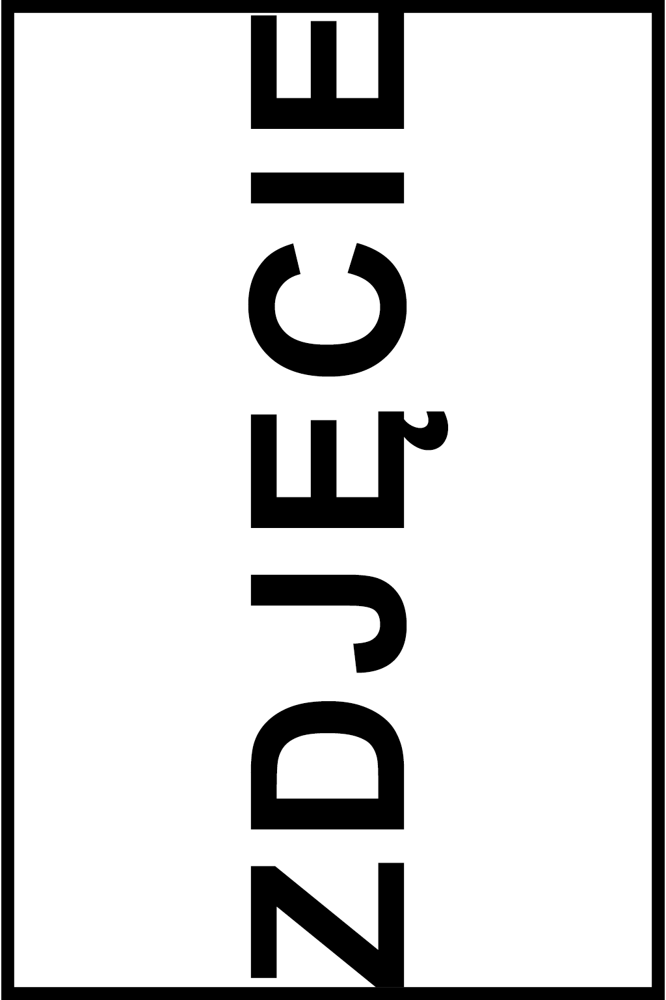

Kilka s贸w o mnie
Nazywam się Katarzyna Wróblewska i od ponad 10 lat zajmuję się fitoterapią, ziołolecznictwem, analizą wyników badań oraz łączeniem kropek w jednostkach chorobowych. Ukończyłam Instytut Zielarstwa Polskiego, odbyłam wiele kursów i uczestniczyłam w licznych webinarach. Nieustannie pogłębiam wiedzę, śledzę nowe doniesienia w dziedzinie badań diagnostycznych i z każdym nowym przypadkiem umacniam zdobyte doświadczenie. Swoją wiedzą, pasją do ziół oraz terapią żywieniową wsparłam już wiele osób, a zaczęłam dawno temu od siebie i bliskich 😊